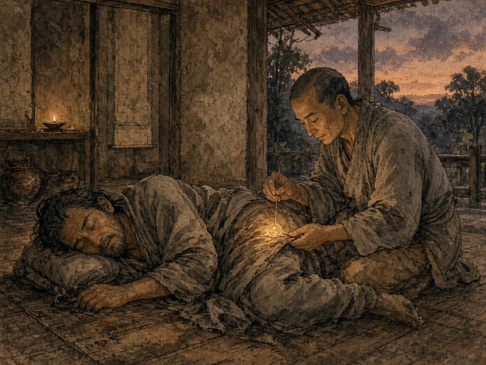

第4回衣裏繋珠（えりけいじゅ）の譬え
配信日
出典『妙法蓮華経』五百弟子受記品第八（法華七喩のひとつ）

貧しい男が親しい友人の家で酔って眠ってしまい、友人は値のつけようがない宝珠を男の衣の裏に縫いつけて出かけます。男はそれに気づかないまま他国をさまよい、わずかな稼ぎで満足して苦労を重ねました。のちに再会した友人は「衣の裏に宝珠があるのに、なぜこんなに苦しんでいるのか」と教えます。
阿羅漢たちはこの話を通して、小さな悟りで満足していたけれど、実は仏さまからもっと大きな智慧の種をとうに授かっていたのだと気づいた喜びを語ります。